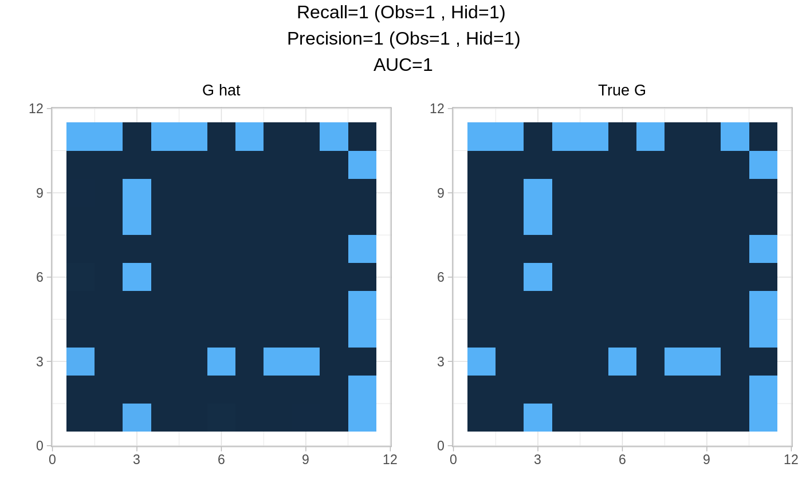

plotPerf.RdComparaitve plot of estimated edge probabilities and original graph.
plotPerf(P, G, r, thresh = 0.5, no.names = FALSE)
| P | Edges probabilities matrix. |
|---|---|
| G | Adjacency matrix of the original graph. |
| r | Number of missing actors. |
| thresh | Required threshold for criteria computations, default to 0.5. |
| no.names | Boolean controlling the display of variable names and ticks. |
Two heatmaps with performance criteria computed for the specified threshold as title.
data=generate_missing_data(n=100,p=10,r=1,type="scale-free", plot=FALSE) PLNfit<-norm_PLN(data$Y) MO<-PLNfit$MO SO<-PLNfit$SO sigma_O=PLNfit$sigma_O #-- use true clique for example initClique=data$TC #-- initialize the VEM initList=initVEM(cliqueList=initClique,sigma_O, MO,r=1 ) nestorFit=nestorFit(MO,SO, initList=initList, maxIter=3,verbatim=1 )#> #> nestor ran in 0.212secs and 3 iterations.#-- obtain criteria plotPerf(nestorFit$Pg, data$G,r=1)